O corpus observado resulta da interação entre as duas dimensões.
Indicadores são construções, e não leituras diretas de um fenômeno (Gingras, 2016; Hicks et al., 2015; Waltman, 2016).
Conceitos
Cobertura, observabilidade e visibilidade não se confundem
Cobertura
representação dos trabalhos em uma infraestrutura, em relação a um universo de referência
Observabilidade
possibilidade de um trabalho aparecer no corpus, sob uma infraestrutura e uma estratégia de recuperação
Visibilidade
circulação, alcance e repercussão científica de um trabalho
Ausência na base, ausência na recuperação, baixa visibilidade e baixa citação não são equivalentes.
Caso empírico
A Educação a Distância brasileira, de 2015 a 2025, é um caso informativo
Campo aplicado e transversal: educação, computação, comunicação e áreas profissionais.
Ciências Humanas: 80% ou mais dos artigos de programas de pós-graduação saíram em periódicos fora da Web of Science (Melo et al., 2021).
Vocabulário atravessado, a partir de 2020, por uma literatura de emergência: o ensino remoto emergencial (Hodges et al., 2020).
O caso não é o objeto da tese: transferem-se os procedimentos, e não as magnitudes.
Pergunta da tese
Como a infraestrutura de dados e a definição do corpus condicionam o retrato quantitativo da produção brasileira em EaD?
Tese defendida
Essas duas escolhas antecedem qualquer indicador. Não são detalhes técnicos: condicionam o objeto que se torna observável à mensuração.
Objetivo específico (a).Comparar como infraestruturas diferentes representam a produção do campo: cobertura, recuperação temática e metadados.
Objetivo específico (b).Analisar como delimitações conceituais do corpus, EaD e ensino remoto emergencial, alteram os indicadores.
Mapa da apresentação
De onde vêm os dados?
Estudo 1. Infraestrutura de informação científica
O que pertence ao corpus?
Estudo 2. Delimitação conceitual do corpus
Duas decisões anteriores ao cálculo de qualquer indicador.
Desenho da tese
Cada estudo varia uma decisão e mantém a outra fixa
Em comum: produção brasileira em EaD, 2015–2025, e o mesmo vocabulário de 23 descritores de frase exata, 17 de EaD e 6 de ensino remoto emergencial.
Estudo 1
varia a infraestrutura
Plataforma Lattes, OpenAlex e SciELO
o mesmo vocabulário aplicado às três
nenhuma fonte tomada como referência verdadeira
Estudo 2
varia a delimitação do corpus
uma só fonte: OpenAlex
EaD institucionalizada e ensino remoto emergencial separados já na coleta
mede o efeito de somar ou separar as duas literaturas
Estudo 1
De onde vêm os dados?
Comparação entre infraestruturas científicas na mensuração da produção brasileira em Educação a Distância
RQ1. Que diferenças aparecem entre Lattes, OpenAlex e SciELO em volume, distribuição temporal, sobreposição, situação do DOI e composição editorial?
RQ2. Como essas diferenças se alteram quando a recuperação é restrita ao título?
“O mapa não é o território.” Alfred Korzybski
Estudo 1 · fontes
Três lógicas de registro, e não três tamanhos
Lattes
OpenAlex
SciELO (coleção scl)
Lógica
declaração curricular
agregação bibliográfica
seleção editorial
Unidade na origem
registro currículo-artigo
trabalho
artigo da coleção
Campos consultados
título e palavras-chave
título e resumo
título, resumo e palavras-chave
Corpus analítico
14.226 registros
13.944 registros
804 registros
Mesmo vocabulário nas três. Nenhuma é tratada como referência verdadeira. As medidas são descritivas: os corpora são enumerações do que foi recuperado, e não amostras.
Coletas de 2026: Lattes, cópia do dump de 17/02; OpenAlex, interface de programação, 11/06; SciELO, varredura da coleção scl, 16/08.
Estudo 1 · RQ1
As séries anuais das três fontes são fortemente associadas
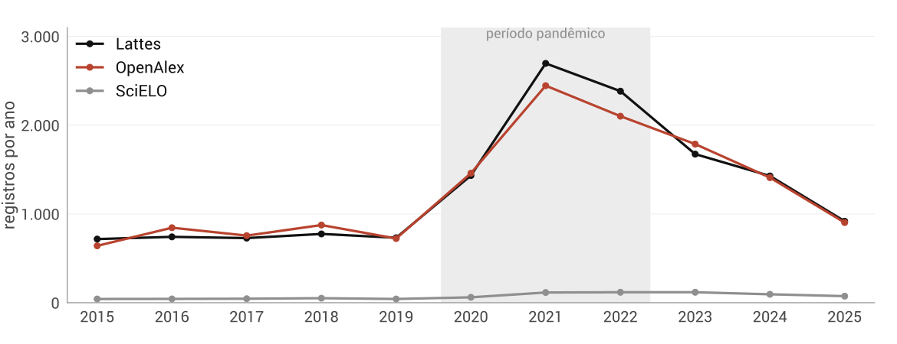
Lattes e OpenAlex: correlação de Pearson de 0,99 nas contagens e de 0,95 nas variações de um ano para o outro, no mesmo sentido em 10 de 10 intervalos. No SciELO, o pico é mais tardio, em 2022 e 2023.
Estudo 1 · RQ1
Séries semelhantes, conjuntos de trabalhos parcialmente distintos
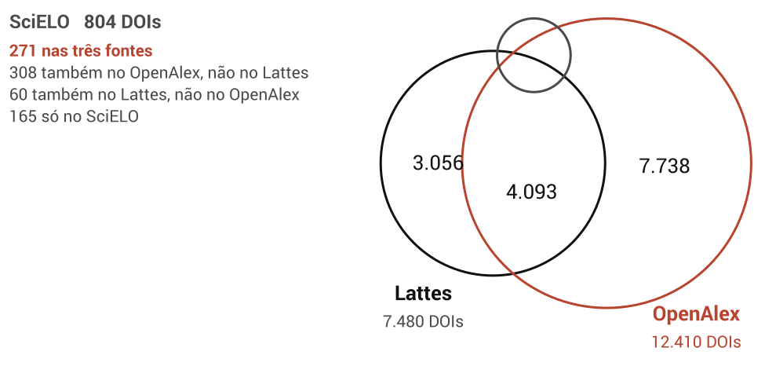
0,28
índice de Jaccard por DOI entre Lattes e OpenAlex
58,3%
dos DOIs do Lattes estão no OpenAlex
35,2%
dos DOIs do OpenAlex estão no Lattes
Sobreposição identificável por DOI, com os campos utilizados em cada fonte. Áreas proporcionais ao número de DOIs.
Estudo 1 · RQ1
Parte da exclusividade aparente está associada ao campo consultado
Dos 8.051 registros do OpenAlex cujo DOI não consta do corpus do Lattes, 76,2% foram recuperados só pelo resumo, campo que a tabela do Lattes utilizada não tem.
DOIs exclusivos do OpenAlex que constam de algum currículo do Lattes
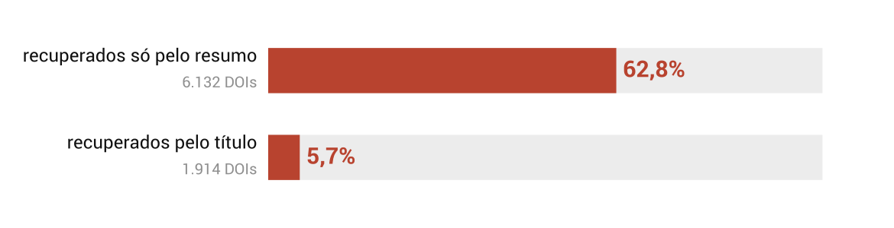
Estar fora do corpus não significa estar fora da infraestrutura.
Estudo 1 · RQ2
Restringir a recuperação ao título aproxima as fontes, mas não as torna equivalentes
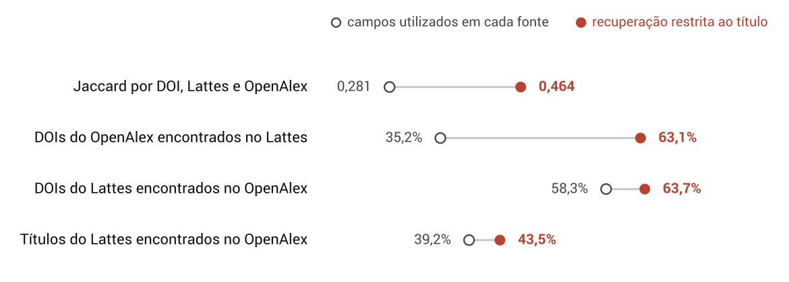
Permanecem 3.788 DOIs exclusivos. Na chave de título, menos da metade dos registros do Lattes tem correspondente no OpenAlex.
Estudo 1 · RQ1
A ausência de DOI no registro não indica ausência de DOI no trabalho
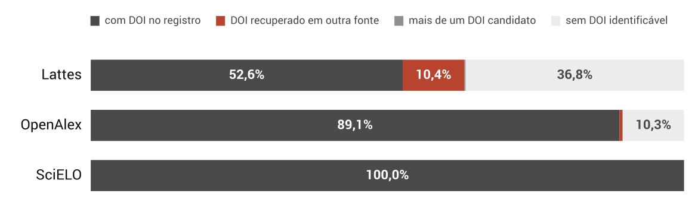
No Lattes, 47,4% dos registros não trazem DOI. Desses, 21,9% (1.478 de 6.746) têm o DOI recuperado em outra infraestrutura.
Estudo 1 · RQ1
O SciELO não é uma base menor: opera sobre outro universo editorial
96,2% dos registros do Lattes e 92,9% dos registros classificáveis do OpenAlex estão em periódicos fora da coleção scl.
Índice de Jaccard por DOI
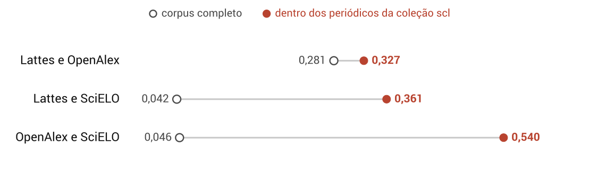
Dentro da coleção, os três corpora têm tamanhos da mesma ordem, mas não recuperam os mesmos trabalhos.
Estudo 1 · síntese
A infraestrutura condiciona o que se torna observável
Semelhança agregada pode coexistir com pequena sobreposição documental.
Exclusividade aparente pode decorrer dos limites da recuperação, e não só da ausência de registro.
A ausência de DOI no registro não indica ausência de DOI no trabalho.
Diferenças de volume estão associadas a universos editoriais distintos.
Nenhuma das três mede o campo de forma mais verdadeira. Cada lógica, curricular, bibliográfica ou editorial, torna observáveis objetos distintos.
Estudo 2
O que pertence ao corpus?
Efeito da definição conceitual do corpus: educação a distância ou ensino remoto emergencial?
RQ1. Como se caracteriza a produção brasileira sobre EaD institucionalizada entre 2015 e 2025?
RQ2. Quão distintos são os estratos de EaD institucionalizada e de ensino remoto emergencial, e como a agregação dos dois altera os indicadores do campo?
“Nada é evidente. Nada é dado. Tudo é construído.” Gaston Bachelard
Estudo 2 · problema
Um vocabulário amplo recupera duas literaturas ao mesmo tempo
EaD institucionalizada
oferta planejada, com desenho instrucional, mediação e estrutura institucional
Ensino remoto emergencial
mudança temporária do ensino presencial, em resposta a uma crise, como a pandemia de COVID-19
Contar ou não o ensino remoto emergencial como parte do campo é uma decisão de delimitação, e não um dado prévio.
ERT, do inglês Emergency Remote Teaching (Hodges et al., 2020). Delimitar um campo é uma decisão metodológica: Gläser et al. (2017); Chen e Song (2019); Maggio et al. (2022).
Estudo 2 · desenho
O desenho de corpus duplo separa as duas literaturas já na coleta
OpenAlex · 23 descritores de frase exata em título e resumo · 2015–2025 · ao menos uma afiliação brasileira · 19.891 registros, 14.890 trabalhos distintos
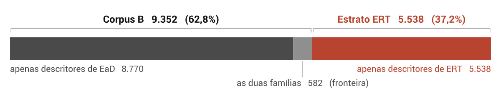
Regra adotada (R0): os 582 casos de fronteira entram no Corpus B. Regras alternativas: R1, que os atribui ao estrato ERT, e R2, que os exclui.
Corpus A, ou corpus combinado = Corpus B + estrato ERT. A partição é exata por construção e foi verificada por cinco checagens automáticas.
Estudo 2 · validação humana cega
Nos grupos exclusivos, a leitura humana corresponde à classificação lexical na grande maioria dos casos
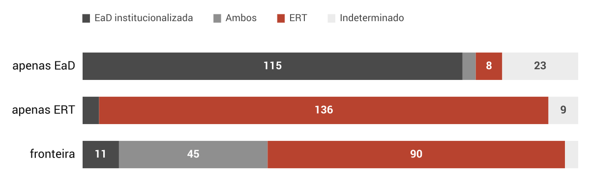
90,6%
apenas EaD: lidos como EaD institucionalizada (decididos; IC [84,2; 94,5])
96,5%
apenas ERT: lidos como ERT (decididos; IC [92,0; 98,5])
60%
fronteira: lidos como ERT e 30% como Ambos
150 trabalhos sorteados por grupo; título e resumo; um único avaliador, o autor, sem acesso à classificação automática; intervalos de Wilson de 95%.
Estudo 2 · RQ2
Os dois estratos têm perfis empiricamente distintos
Corpus B · EaD inst.
Estrato ERT
Trabalhos anteriores a 2020
43,1%
0,05%
Publicados em português
73,9%
87,6%
Em acesso aberto
81,5%
93,2%
Rota diamante, segundo o OpenAlex
54,8%
72,9%
Com colaboração internacional
19,6%
12,9%
Média de citações, coorte de 2022
2,40
1,32
Veículos diferentes: Jaccard de 0,25 entre os dez mais frequentes de cada estrato. Nas coortes de 2021 e 2022, as diferenças de média de citação são grandes, mas os efeitos por postos são pequenos.
Estudo 2 · RQ2
A agregação dos estratos altera o retrato do crescimento
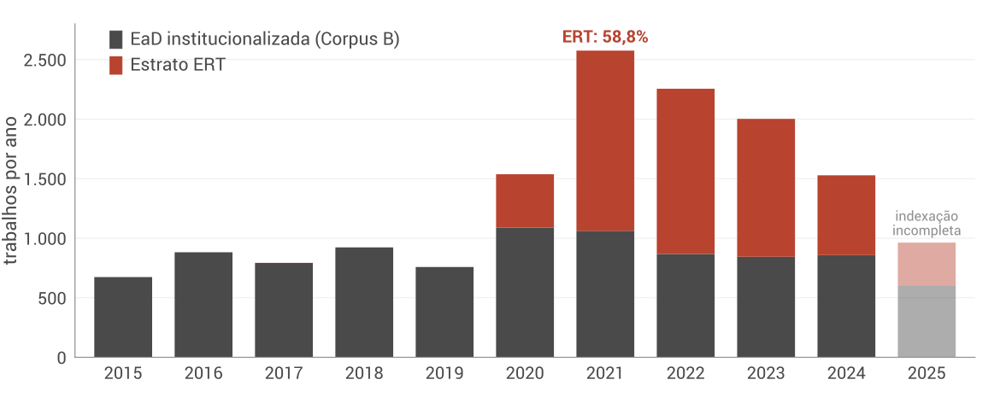
Corpus B: 2,7% ao ano, pico em 2020
Corpus combinado: 9,5% ao ano, pico em 2021
Estudo 2 · RQ2
A agregação altera alguns indicadores e quase não altera outros
Corpus B
Corpus combinado
Crescimento anual, 2015–2024
2,7%
9,5%
Ano de pico
2020
2021
Núcleo de Bradford (veículos com um terço da produção)
46
68
Publicados em português
73,9%
79,0%
Média de citações
3,54
2,94
Expoente de Lotka, máxima verossimilhança
2,11
2,12
Estudo 2 · impacto de citações
Depois da idade do trabalho, idioma e acesso aberto têm a maior importância preditiva
Importância preditiva (gradient boosting)
idade do trabalho
idioma
rota de acesso aberto
Estrato, campo disciplinar e tamanho da equipe vêm depois.
R² = 0,29 e ROC-AUC = 0,76: os metadados preveem as citações só em parte.
Verificação paramétrica: binomial negativo com efeitos fixos de ano
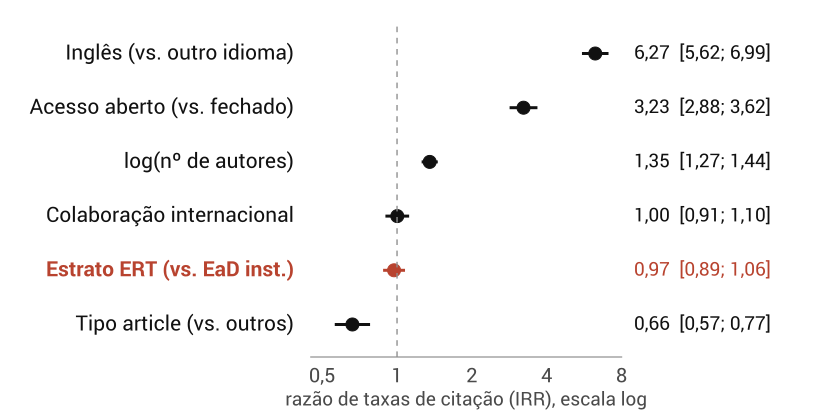
Corpus A, com o estrato como atributo. Associações condicionais às covariáveis e à especificação, e não efeitos causais.
Estudo 2 · síntese
A delimitação condiciona o que é contabilizado
O estrato de ensino remoto emergencial tem perfil temporal, editorial e citacional distinto.
A agregação eleva o crescimento estimado de 2,7% para 9,5% ao ano e desloca o pico de 2020 para 2021.
A leitura humana corresponde à partição nos grupos exclusivos; a fronteira é heterogênea.
A produção sobre EaD institucionalizada é predominantemente nacional, em português e em acesso aberto, com menor impacto citacional nas bases usadas.
Os dados não decidem se o ensino remoto pertence à EaD. Mostram quanto essa decisão muda o retrato do campo.
Integração
Os dois estudos tratam de dois momentos da mesma cadeia
Integração
Um indicador tecnicamente correto pode descrever um objeto diferente do suposto
A diferença está no conjunto observado, e não na estimativa calculada sobre ele. Nenhum tratamento estatístico posterior a resolve.
Requisito prático: tornar explícitas, e submeter a verificação, as escolhas que antecedem a contagem.
Contribuições
O que a tese acrescenta
Metodológica
Comparar infraestruturas sem eleger uma referência, com sensibilidade ao campo consultado. Desenho de corpus duplo, com validação humana cega e medida do efeito da agregação.
Empírica
Quanto três infraestruturas divergem e quanto os indicadores mudam com uma literatura de emergência, em um campo nacional publicado sobretudo em português.
Conceitual
Semelhança agregada não é coincidência de trabalhos. Ausência de registro não é ausência do objeto.
Limitações
Os resultados valem para o campo, o período e as regras adotadas
Escopo
Um campo, um país, um período marcado pela pandemia. As magnitudes não se transpõem sem nova medição.
Fontes
Nenhuma infraestrutura oferece parâmetro externo de completude. A tese compara instrumentos, sem eleger o mais fiel.
Regras
Critérios lexicais e de afiliação têm erro residual. A validação humana teve um único avaliador.
Objeto
A tese trata de registro e delimitação, e não da qualidade ou do mérito dos trabalhos.
Conclusão
Infraestrutura e delimitação não são detalhes técnicos
De volta à pergunta: como essas duas escolhas condicionam o retrato da produção brasileira em EaD?
Mesmo vocabulário, três infraestruturas
trajetórias quase idênticas e conjuntos de trabalhos parcialmente distintos: 271 DOIs comuns às três.
Mesma fonte, duas delimitações
crescimento de 2,7% ou de 9,5% ao ano, ambos corretos para os seus corpora.
No campo e no período estudados, as duas escolhas alteram o conjunto de trabalhos que se torna observável à mensuração. Devem ser declaradas, medidas e submetidas a análise de sensibilidade.
A integração vai de registros a agrupamentos bibliográficos
28.974
registros submetidos à integração (14.226 + 13.944 + 804)
8.638
vínculos entre pares de registros
21.426
agrupamentos (componentes conexos do grafo)
Correspondência em três níveis
DOI normalizado idêntico
título normalizado, ano e ISSN
título normalizado e ano
Veto a pares com DOIs divergentes, salvo inspeção individual ou regra explícita. 15.313 registros isolados; maior agrupamento com 5 registros. 375 agrupamentos (1,75%) reúnem DOIs distintos.
Registro, vínculo e agrupamento são unidades distintas. Um agrupamento com k registros consome k - 1 vínculos; 1.090 vínculos ligam registros já conectados por outro caminho.
Inspeção manual dirigida e revisão sistemática dos universos de risco
Conjunto
Casos
Mesma
Distintas
Indeterm.
Inspeção manual dirigida (um avaliador)
Vínculos inspecionados, três níveis
68
68
0
–
Pares de título idêntico não vinculados
25
25
0
–
Pares vetados por DOI divergente
35
33
2
–
Revisão sistemática por regra explícita
Título idêntico sem vínculo (restantes dos 228)
203
142
12
49
Título idêntico com DOI divergente
446
381
32
33
Vínculos por título e ano sem DOI igual
1.699
0 com contradição forte
Inspeção: 58 vínculos acrescentados, nenhum removido. Revisão: 490 vínculos acrescentados. Nos 67 pares com decisão humana, a regra coincidiu em 63 e ficou indeterminada em 4.
A inspeção é controle de qualidade nos pontos de maior risco. Não é amostra probabilística e não estima precisão nem revocação.
A concordância de autores decresce com o nível de correspondência
Nível
Pares
Autores concordam
1. DOI
5.294
97,2%
2. Título, ano e ISSN
931
93,9%
3. Título e ano
768
93,0%
Pares aleatórios de fontes distintas
–
0,39%
No nível de DOI, o ORCID coincide em 99,8% dos 448 pares com ORCID nos dois lados. 14,4% dos vínculos por DOI (763 de 5.287) não seriam reencontrados pela chave de título e ano. Entre pares vetados, autores concordam em 94,3% com ISSN em comum e em 77,1% sem ISSN em comum.
Os 23 descritores de frase exata, em duas famílias
EaD institucionalizada (17)
educação a distância
ensino a distância
aprendizagem a distância
educação online
ambiente virtual de aprendizagem
ambientes virtuais de aprendizagem
curso a distância
Universidade Aberta do Brasil
educación a distancia
distance education
distance learning
e-learning
online education
massive open online course
MOOC
virtual learning environment
online course
Ensino remoto emergencial (6)
ensino remoto
aulas remotas
educação remota
emergency remote teaching
remote teaching
remote learning
Busca por frase exata, para evitar falsos positivos como "e-learning" reduzido a "learning". No Estudo 1, as famílias servem só como estratificação; no Estudo 2, definem a partição.
“Produção brasileira” é operacionalizada de três formas
Lattes
declarada em currículo da plataforma nacional
OpenAlex
ao menos uma autoria com instituição brasileira nos metadados
SciELO
publicada em periódico da coleção brasileira scl
Regra conservadora, só com evidência direta no registro: o Lattes perde 2.012 registros (14,1%); o Jaccard entre Lattes e OpenAlex passa de 0,281 para 0,269.
O volume do Lattes depende da regra; a sobreposição quase não depende.
Trabalhos distintos são estimativas. Resumos incompletos no OpenAlex. Textos de resumo e palavras-chave não preservados nos arquivos normalizados. Rótulo article heterogêneo. Coletas em datas diferentes.
Casamento
Falsos negativos: 82 pares de título idêntico indeterminados; títulos traduzidos não buscados. Sete agrupamentos indiretos não decididos. Inspeção com um avaliador e regra única, sem estimativa de precisão ou revocação.
Assimetrias
A tabela do Lattes não tem resumo. A produção brasileira é definida de modo diferente em cada fonte. Um quinto do OpenAlex sem ISSN. A coleção scl não esgota o SciELO.
Validação humana: classificação dos 150 trabalhos de cada grupo
Leitura humana
Apenas EaD
Apenas ERT
Fronteira
EaD institucionalizada
115
5
11
Ensino remoto emergencial
8
136
90
Ambos
4
0
45
Indeterminado
23
9
4
Medidas, entre os decididos
Confirmação estrita
90,6% [84,2; 94,5]
96,5% [92,0; 98,5]
–
Leitura ampliada, com Ambos
93,7% [88,1; 96,8]
96,5% [92,0; 98,5]
–
EaD ou Ambos
–
–
38,4% [30,9; 46,4]
Global ponderado pela participação de cada grupo: 89,5% [85,9; 92,3] dos decididos. Auditoria dirigida de 16 casos suspeitos: 15 lidos como EaD institucionalizada, 1 indeterminado.
Janelas de citação aproximadamente comparáveis na mesma coorte. Valores descritivos, sem valores-p. Diferenças de média grandes com efeitos por postos pequenos indicam distribuições muito assimétricas.
A associação do estrato ERT depende da especificação temporal
Especificação temporal
Modelo
AIC
BIC
OR ERT [IC 95%]
IRR ERT [IC 95%]
A: log(idade) como offset
ZINB
47.915
48.037
1,26 [1,16; 1,36]
1,37 [1,26; 1,49]
C1: log(idade), coeficiente livre
ZINB
47.854
47.983
1,26 [1,16; 1,36]
1,45 [1,33; 1,58]
C2: spline natural da idade
NB
47.583
47.660
1,11 [1,02; 1,21]
1,09 [1,00; 1,18]
B: efeitos fixos de ano, principal
NB
47.237
47.374
1,02 [0,93; 1,11]
0,97 [0,89; 1,06]
Especificação principal pelo menor BIC, critério definido antes da estimação. Com termo temporal flexível, o componente de inflação do ZINB degenera e o modelo se reduz à binomial negativa. O modelo hurdle não produziu estimativas estáveis.
Posição de cada atributo nas medidas de importância preditiva
Atributo
Citado ou não
Taxa de citação
SHAP
log(idade)
1
1
1
Idioma
3
2
2
Rota de acesso aberto
2
3
3
Estrato (EaD ou ERT)
7
4
6
Campo
4
5
4
Nº de autores
5
6
5
Nº de países
8
7
9
Tipo documental
6
8
8
Classificador: ROC-AUC de 0,764 (validação cruzada, 0,755). Regressor de log(1 + citações): R² de 0,292 (0,283). Máquina de vetores de suporte, como verificação: AUC de 0,72, com os mesmos três primeiros atributos.
Estrutura do Corpus B: autores, veículos e instituições
Autores
79,1% assinam um único trabalho. Expoente de 2,11 por máxima verossimilhança e de 2,67 por mínimos quadrados; distância KS de 0,142. Gini da produtividade: 0,275.
Veículos
Núcleo de Bradford: 46 veículos com um terço da produção; zonas de 46, 328 e 1.742 veículos. À frente: EAD em FOCO (410), Research, Society and Development (171), RENOTE (149).
Instituições
UFRGS
486
USP
428
UFSC
311
UNESP
273
UnB
235
UNICAMP
208
Leitura descritiva da assimetria, sem aderência estrita à Lei de Lotka. Os veículos incluem periódicos e anais; Bradford não é verificada em sentido estrito.
Seis comunidades em torno de universidades públicas. 35 instituições mais produtivas, 199 arestas com ao menos duas copublicações, densidade de 0,33, modularidade de 0,341.
Grau ponderado: USP, UFRGS, UNESP, UFPE e UFSC. Intermediação: USP, UFRGS, UFSC, UFPE e UFF.
Com 20, 35 e 50 instituições: densidade de 0,463, 0,334 e 0,242; modularidade de 0,307, 0,341 e 0,408.
Figura reproduzida da tese, sem alteração; a cor indica a comunidade. Métricas condicionais ao escopo de 35 instituições.
O tema da pandemia concentra o estrato ERT e também entrou no Corpus B
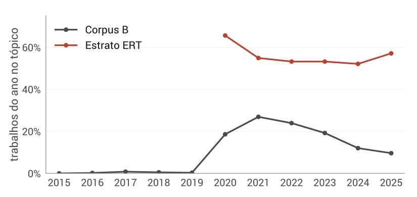
BERTopic sobre 11.662 trabalhos com resumo; quatro macrotópicos e 21 tópicos.
57,6% do estrato ERT no macrotópico da pandemia, contra 13,1% do Corpus B. Divergência de Jensen–Shannon de 0,39, contra 0,04 com rótulos embaralhados.
Fronteira: 62,0% no tópico da pandemia, contra 8,2% no restante do Corpus B.
Tópico "Ensino na pandemia de COVID-19", por ano. Evidência temática complementar, e não validação da partição. Descritores retirados do texto antes da modelagem.